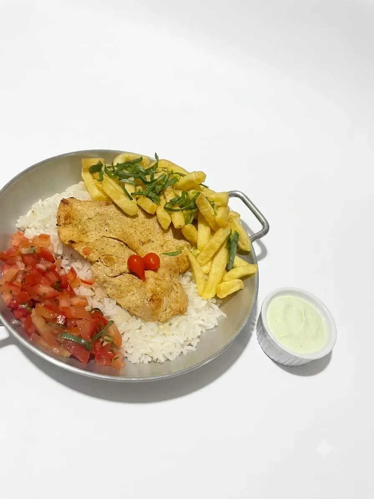
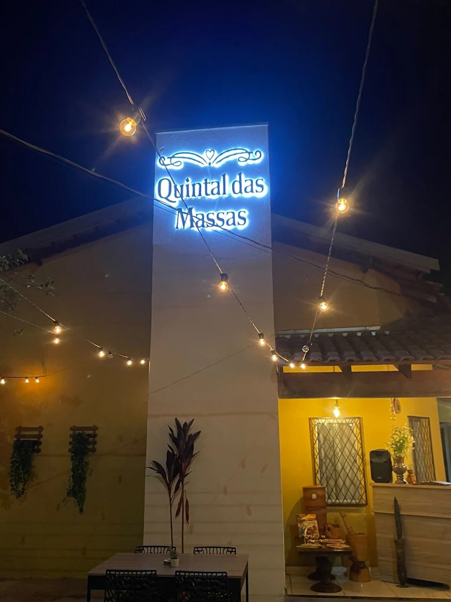
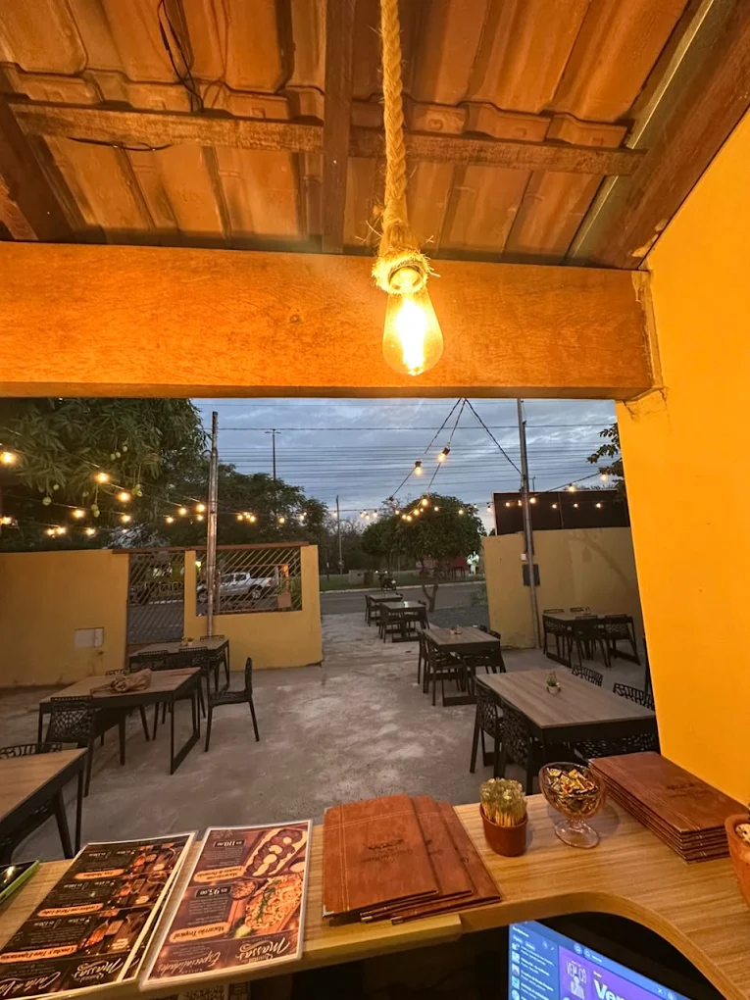
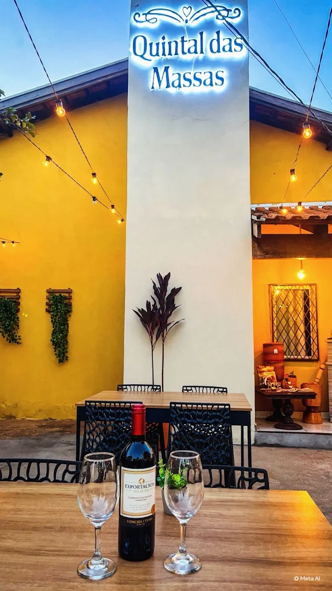
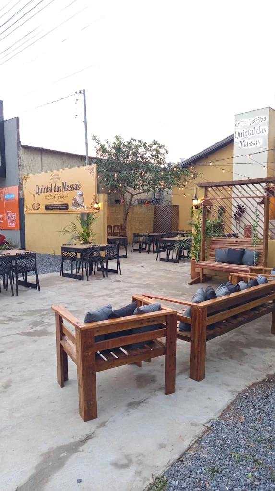
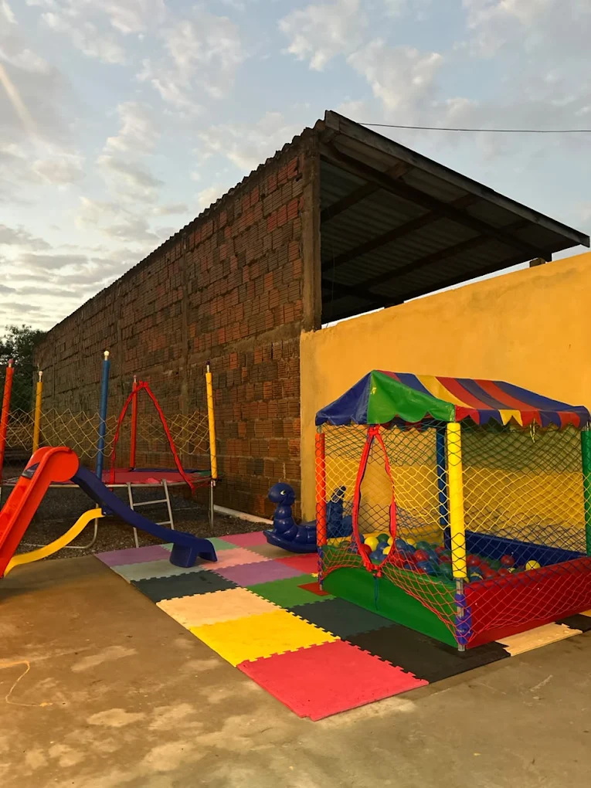
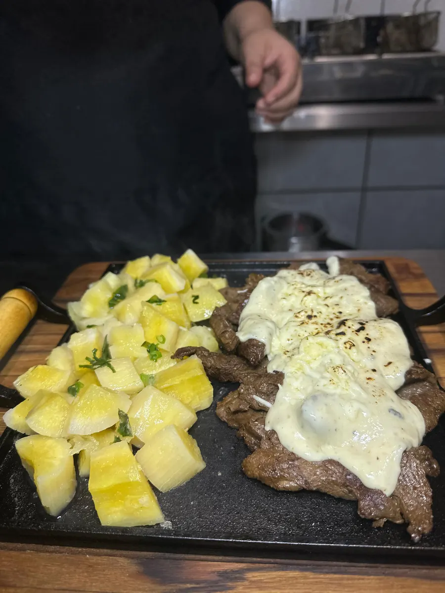

Massas artesanais
QUINTAL DAS MASSAS
Chef Fabi
Aqui você encontra muita qualidade e sabor. Esperamos você e sua família!
Sejam muito bem-vindos
Convidamos você a viver uma experiência gastronômica especial, preparada com carinho e sabor em cada detalhe. Em nosso cardápio você encontra massas artesanais, pratos regionais, petiscos, carnes selecionadas e até sabores exóticos - tudo pensado para surpreender o seu paladar.
Desejamos que você aproveite cada momento e tenha uma excelente experiência à mesa.





Uma seleção do quintal
Sabores que atravessam a mesa

Feito à mãoO jeito do Quintal
Uma mesa para ficar
Para compartilhar
Porções suculentas e petiscos preparados na medida certa para abrir o apetite e reunir a mesa.
O prato principal
Massas artesanais frescas e jantinhas completas, preparadas com tempo, cuidado e sabor inconfundível.
Um final doce
Sobremesas irresistíveis feitas para fechar a experiência com chave de ouro e prolongar a conversa.
Vamos receber você
Endereço
Avenida Duque de Caxias, 1184
Jardim, MS
Jardim, MS
WhatsApp
Instagram